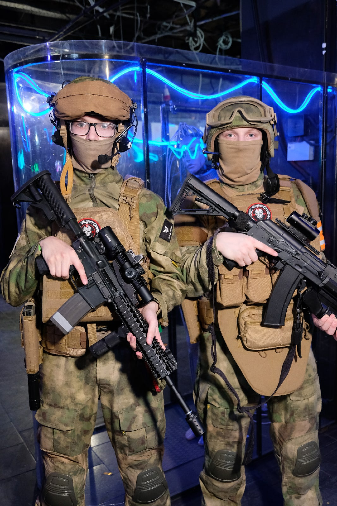

Официально отряд был основан в 2021г, когда мы набрали достаточно участников. До этого момента мы подбирали оптимальное снаряжение и писали устав нашего будущего отряда.
Основателями отряда по праву считаются два человека: Талалаев Андрей Алексеевич и Крылов Егор Андреевич.
Мы общественно не официальная компания специализирующаяся на общественных, военно-тактических и тематических мероприятиях. Весь отряд прошёл довольно долгий путь, так как изначально занимался волонтёрской деятельностью в качестве Службы Безопастности на разных мероприятиях.
После долгих дискуссий, были выбраны следующие параметры для комплекта:
Вот пример комплектов на двух оператиниках (Основателях):
